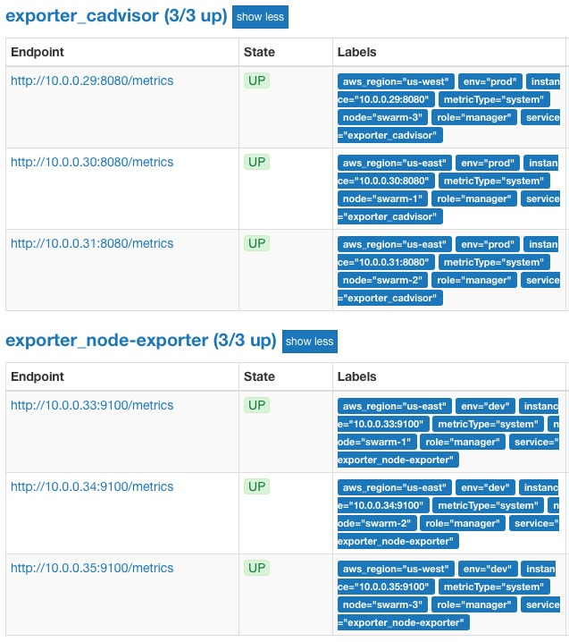

Flexible Labeling with Docker Flow Monitor¶
Docker Flow Monitor and Docker Flow Swarm Listener can be configured to allow for more flexible labeling of exporters. Please read the Running Docker Flow Monitor tutorial before reading this one. This tutorial focuses on configuring the stacks to allow for flexible labeling.
Setting Up A Cluster¶
Info
Feel free to skip this section if you already have a Swarm cluster that can be used for this tutorial
We'll create a Swarm cluster consisting of three nodes created with Docker Machine.
git clone https://github.com/vfarcic/docker-flow-monitor.git cd docker-flow-monitor ./scripts/dm-swarm.sh eval $(docker-machine env swarm-1)
Deploying Docker Flow Monitor¶
We will deploy stacks/docker-flow-monitor-flexible-labels.yml stack that contains three services: monitor, alert-manager and swarm-listener. The swarm-listener service includes an additional environment variable: DF_INCLUDE_NODE_IP_INFO=true. This configures swarm-listener to send node information to monitor as labels. The node's hostname will be included in every metric from the exporter with the label: node.
In this tutorial, we will set up two additional labels: env and metricType. To enable these labels, we add the the environment variable: DF_SCRAPE_TARGET_LABELS=env,metricType to the monitor service:
... monitor: image: vfarcic/docker-flow-monitor:${TAG:-latest} environment: - DF_SCRAPE_TARGET_LABELS=env,metricType ...
This sets up flexible labeling for our exporters. If an exporter defines a deploy label com.df.env or com.df.metricType, that label will be used by monitor.
We will also configure DFM to include node and engine labels in our targets by adding the environment variable: DF_NODE_TARGET_LABELS=aws_region,role. aws_region will be a label we will manually add to our nodes, and role is a label that is already included by DFSL. For a full list of all default node labels, please consult the Node Notification docs.
Info
Only [a-zA-Z0-9_] are valid characters in prometheus labels.
To get the nodes information, DFSL is configured to send node events to DFM by setting DF_NOTIFY_CREATE_NODE_URL and DF_NOTIFY_REMOVE_NODE_URL:
... monitor: image: vfarcic/docker-flow-monitor:${TAG:-latest} environment: - DF_NODE_TARGET_LABELS=aws_region,role - DF_GET_NODES_URL=http://swarm-listener:8080/v1/docker-flow-swarm-listener/get-nodes ... swarm-listener: image: vfarcic/docker-flow-swarm-listener environment: ... - DF_NOTIFY_CREATE_NODE_URL=http://monitor:8080/v1/docker-flow-monitor/node/reconfigure - DF_NOTIFY_REMOVE_NODE_URL=http://monitor:8080/v1/docker-flow-monitor/node/remove - DF_INCLUDE_NODE_IP_INFO=true ...
Let's deploy the monitor stack:
docker network create -d overlay monitor docker stack deploy \ -c stacks/docker-flow-monitor-flexible-labels.yml \ monitor
Adding Labels to Nodes¶
We will now add the aws_region labels to our nodes. For DFM to recognize the labels, the labels must to be prefixed by com.df.:
docker node update --label-add com.df.aws_region=us-east swarm-1 docker node update --label-add com.df.aws_region=us-east swarm-2 docker node update --label-add com.df.aws_region=us-west swarm-3
Collecting Metrics and Defining Alerts¶
We will deploy exporters stack defined in stacks/exporters-tutorial-flexible-labels.yml, two containing two services: cadvisor and node-exporter.
The definition of the cadvisor service contains additional deploy labels:
cadvisor: image: google/cadvisor networks: - monitor ... deploy: mode: global labels: ... - com.df.scrapeNetwork=monitor - com.df.env=prod - com.df.metricType=system
The com.df.scrapeNetwork deploy label tells swarm-listener to use cadvisor's IP on the monitor network. This is important because the monitor service is using the monitor network to scrape cadvisor. The com.df.env=prod and com.df.metricType=system deploy labels configures flexible labeling for cadvisor.
The second service, node-exporter is also configured with flexiable labels:
node-exporter: image: basi/node-exporter networks: - monitor ... deploy: mode: global labels: ... - com.df.scrapeNetwork=monitor - com.df.env=dev - com.df.metricType=system
Let's deploy the exporter stack
docker stack deploy \ -c stacks/exporters-tutorial-flexible-labels.yml \ exporter
Please wait until the service in the stack are up-and-running. You can check their status by executing docker stack ps exporter.
Now we can open the Prometheus targets page from a browser.
If you're a Windows user, Git Bash might not be able to use the
opencommand. If that's the case, replace theopencommand withecho. As a result, you'll get the full address that should be opened directly in your browser of choice.
open "http://$(docker-machine ip swarm-1):9090/targets"
You should see a targets page similar to the following:

Each service is labeled with its associated com.df.env or com.df.metricType deploy label. In addition, the node label is the hostname the service is running on. The node labels aws_region and role are also included for each target.
What Now?¶
Docker Flow Monitors's flexible labeling feature provides more information about your services. Please consult the documentation for any additional information you might need. Feel free to open an issue if you require additional info, if you find a bug, or if you have a feature request.
Before you go, please remove the cluster we created and free those resources for something else.
docker-machine rm -f swarm-1 swarm-2 swarm-3